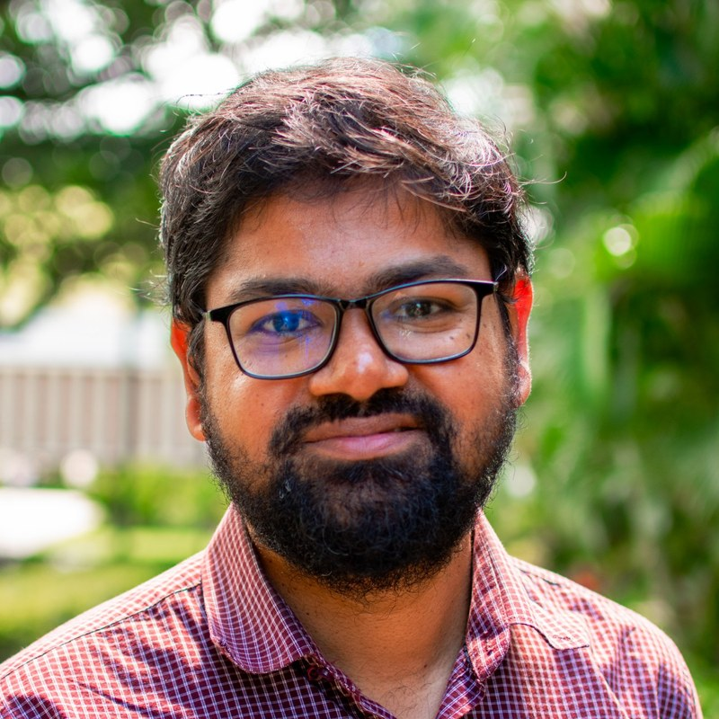

Central banking · Economics · Finance
Zulfiqure Ali
I study how monetary policy and bank regulation transmit through banking systems in emerging economies.
Joint Director, Bangladesh Bank
MA in Economics, University of Hawaiʻi at Mānoa · East-West Center Fellow
Chattogram, Bangladesh
About
I am a Joint Director at Bangladesh Bank, the central bank of Bangladesh. Since 2019 I have worked across monetary and foreign exchange policy, on-site bank supervision, risk-based supervision, Basel III implementation and treasury operations. Before joining the central bank, I spent three years in commercial banking as a credit analyst, relationship manager and branch operations manager.
I hold an MA in Economics from the University of Hawaiʻi at Mānoa, where I was an East-West Center Graduate Degree Fellow and a graduate teaching assistant. My research brings together policy experience and empirical methods to ask how policy and technology shape banks and labour markets in emerging economies.
Labor Economics Development Economics Public Policy Banking Finance
Research interests
My research asks how policy and technology shape banks and labour markets in emerging economies.
- Monetary transmission in bank-dominated economies: how policy rates reach lending and deposit rates when interest rates are controlled or administered.
- Global shocks and bank behaviour: how emerging-market banks respond to global monetary tightening, exchange-rate pressure and capital-flow reversals.
- Technology, finance and work: how digital finance and AI change banking, financial inclusion and the demand for skills.
Publications
Revisiting the impact of mobile banking in financial inclusion among the developing countries
Akter, U., Anwar, S. M. R., Mustafa, R., & Ali, Z. (2021). International Journal of Financial Research, 12(2), 62–74.
DOI: 10.5430/ijfr.v12n2p62 · Google Scholar
Completed research
The Paradox of Progress: Decomposing the Evolution of the Black–White Wage Gap, 1989–2010
MA capstone, Department of Economics, University of Hawaiʻi at Mānoa, 2026
Using harmonized NLSY79 and NLSY97 data on men aged 26–30 and an Oaxaca–Blinder decomposition, I show that the racial log-wage gap widened from 0.199 to 0.238 between 1989 and 2010. Black men’s relative gains in education were more than offset by growth in the unexplained component.
Experience
2019 – present
Bangladesh Bank · Central bank of Bangladesh
Joint Director (2026 – present) · Deputy Director (2022 – 2026) · Assistant Director (2019 – 2022)
Seven years inside a central bank have given me the institutional knowledge and data experience that motivate my research. I contributed to the Monetary Policy Statement and to policy-rate and bank-rate decisions, helped formulate foreign exchange regulation for banks and their offshore units, traded in open-market operations, and worked on risk-based supervision, Basel III implementation and information-system audit. I now lead on-site inspections of commercial bank branches. This work has given me first-hand knowledge of how policy reaches banks and borrowers in an emerging economy, and of the data central banks use to monitor it.
Since completing my MA in May 2026, I have combined this role with independent research and quantitative training.
2025
Other experience · Hawaiʻi
- Planning intern, Hawaiʻi Department of Transportation: pedestrian and bicycle infrastructure, traffic safety and climate policy analysis.
- Fellow, Food Vault Hawaiʻi: data collection and analysis on student food insecurity.
2016 – 2019
Private commercial bank · Senior Officer, Dhaka
Credit analyst, relationship manager and branch operations manager.
Education
2024 – 2026
MA in Economics · University of Hawaiʻi at Mānoa
East-West Center Graduate Degree Fellow. Capstone in labor economics.
2016
MBA in Finance · University of Chittagong
2014
BBA in Finance and Banking · University of Chittagong
Teaching
2025 – 2026
Graduate Teaching Assistant · Department of Economics, University of Hawaiʻi at Mānoa
- ECON 330 Intermediate Macroeconomics (Spring 2026, two sections)
- ECON 130 Principles of Microeconomics (Fall 2025)
Teaching interests: principles of economics, intermediate macroeconomics, money and banking, financial institutions and markets, financial inclusion, and the economy of Bangladesh.
Honours & skills
Awards & certifications
- TK Jayaraman and Family Prize, Best Graduating MA Student, University of Hawaiʻi at Mānoa, 2026
- Burnham Campbell Fellowship Award, Department of Economics, University of Hawaiʻi at Mānoa, 2025 and 2026
- Achievement Scholarship, Department of Economics, University of Hawaiʻi at Mānoa, 2026
- Graduate Research Stipend (merit-based), Department of Economics, University of Hawaiʻi at Mānoa, 2025
- East-West Center Graduate Degree Fellowship, 2024–2026
- Certified Digital Finance Practitioner (CDFP), The Fletcher School, Tufts University, 2024
Methods & tools
- Applied and panel-data econometrics
- Decomposition methods (Oaxaca–Blinder)
- R, Stata, Python